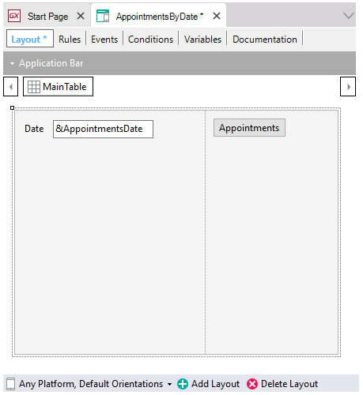
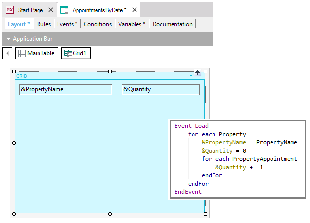

Panel for Smart Devices object (GeneXus 16)
Defines a Smart Devices UI screen. Shows and/or requests data with flexible layouts. Actions are defined through events. DescriptionThrough this object, you can show data to the user, ask the user for data, and make appealing and flexible layouts. Very useful for creating more-complex user information interaction screens, creating wizards, showing messages, creating another kind of menus but more flexible, showing data obtained from other sources (e.g. Data Providers). It is similar to a Web Panel object (and to any section in a Work With object empty initialized). That is to say, it implements a single screen that started empty, with no definition, so the developer will be free to program as needed.  Its use is the same as is made in standard Work With object node, except that it hasn't an associated Business Component. The layout is empty, ready to be completed. In this case, you are implementing a panel to ask the user for a date and invoke a panel that shows all the appointments for that day. To do so, we create a variable &appointmentDate of Date data type, which is the one we incorporate in the layout, and an action inserted in the Layout itself (as a button), whose event is programmed in the Events section. This panel doesn't have a base table, but you could design panels with base table, as you would do with the List or Sections of a Work With object, and all you have seen there is valid here. GridsThere is not a maximum for Grids loaded manually (without base table), or through attributes (with base table).  In the example, you have a grid with one &PropertyName variable and another &Quantity variable that are loaded in the Load event through a For Each command that goes through the properties and a nested For Each that calculates the number of appointments in that property. This means that it is a grid without a base table that is loaded when the Load event is executed. If the information you need to list comes from external sources, they must necessarily be associated with a collection of SDTs. To do so, a variable is created whose data type is the SDT, and then it is simply inserted in the form (a grid control associated with the variable will be automatically inserted, and it will display its data at runtime). It is obvious that you will have to load that SDT prior to the grid’s Load event. For that purpose you have to invoke the Data Provider, Procedure, or Web Service that loads it, in the Start or Refresh event. See alsoVideos |